11. 其他软件¶
11.1. 哪些软件可以连接SIoT¶
只要能够访问网络，能做超级链接，就能和SIoT互动。比如，VB、PowerPoint、Word、Excel等等。
11.2. SIoT的WebAPI简介¶
VB（Visual Basic）程序中的Microsoft.XMLHTTP方法为VB软件与SIoT物联网平台的连接提供了支持。 与此同时，powerpoint、word和excel中的VBA程序与VB语言的语法和方法几乎一致。
- Microsoft.XMLHTTP方法简介
客户端调用XMLHTTP的过程很简单，只有5个步骤：
1、创建XMLHTTP对象
2、打开与服务端的连接，同时定义指令发送方式，服务网页(URL)和请求权限等。
客户端通过Open命令打开与服务端的服务网页的连接。与普通HTTP指令传送一样，可以用"GET"方法或"POST"方法指向服务端的服务网页。
3、发送指令。
4、等待并接收服务端返回的处理结果。
5、释放XMLHTTP对象
11.3. 具体例子（PPT）¶
1、制作ppt页面
1）第一页：设置服务器连接信息
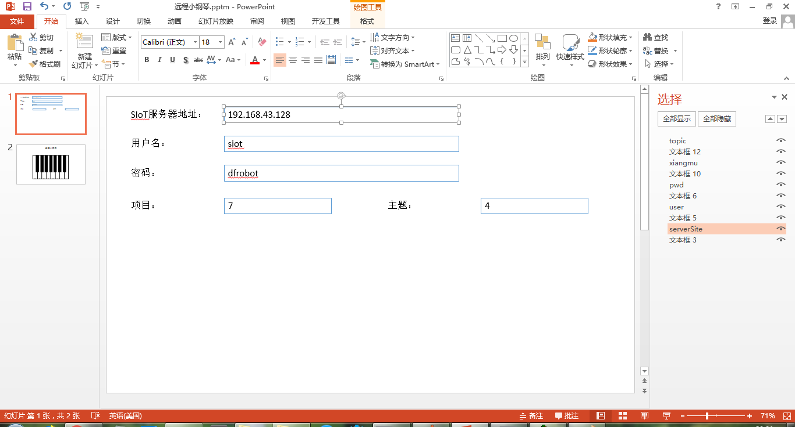2）第二页：远程小钢琴界面
通过插入形状，制作远程小钢琴的界面
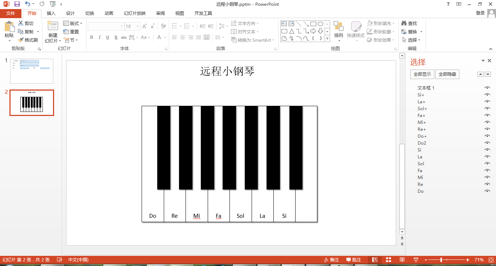2、vba编写程序
通过开发工具中的宏程序，创建7个音阶（do re mi fa sol la si）对应的程序。
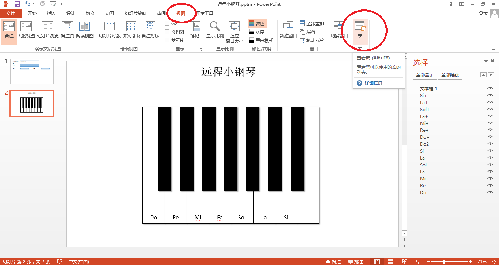 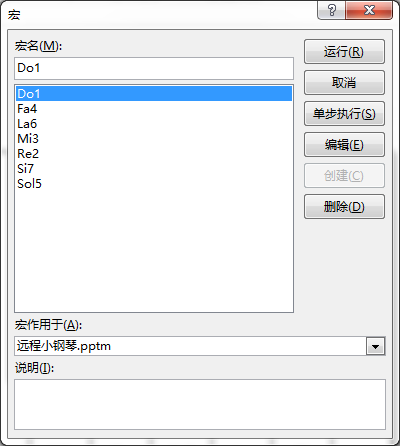 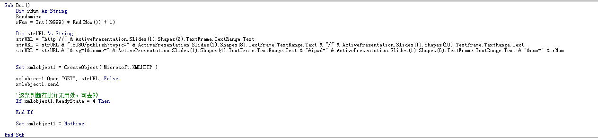 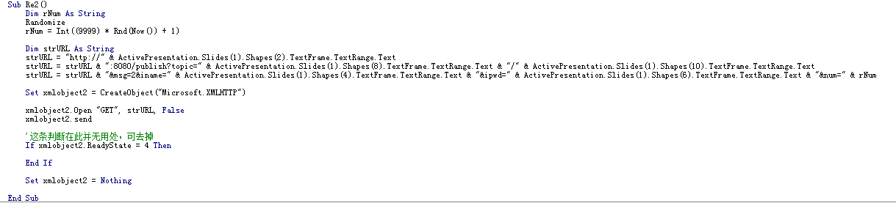 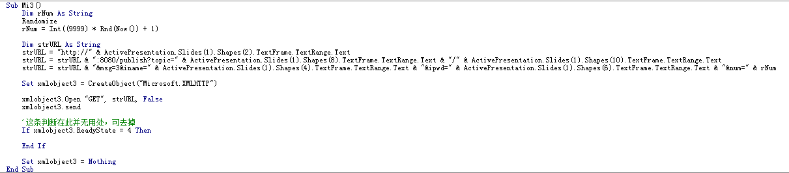 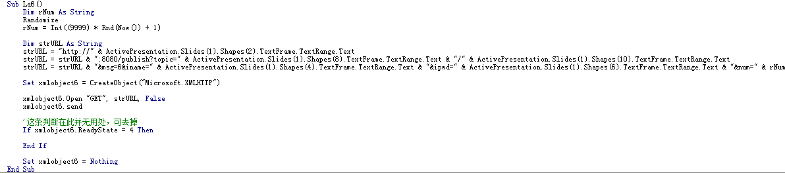3、ppt页面形状设置动作
将ppt第二页中7个钢琴键的形状分别插入动作，并选择对应的运行程序。
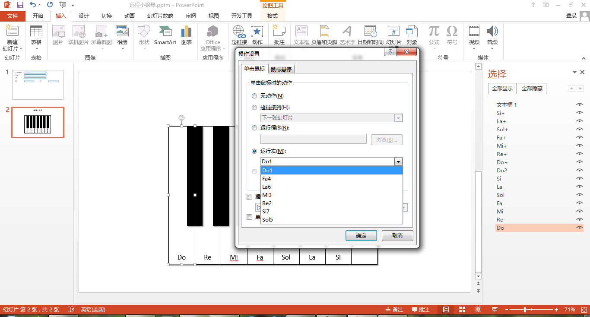4、掌控板端编写音乐程序
设置掌控板连接WIFI和SIoT物联网平台
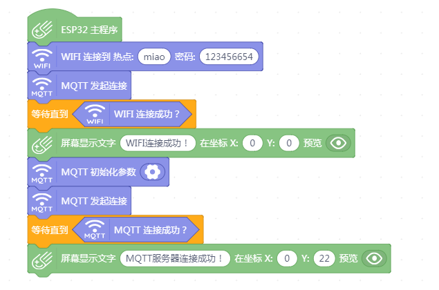在掌控板端编写对应的音乐播放程序，当分别接收到7个音阶（do re mi fa sol la si）所对应的指令（1、2、3、4、5、6、7）时，播放相应的音乐。
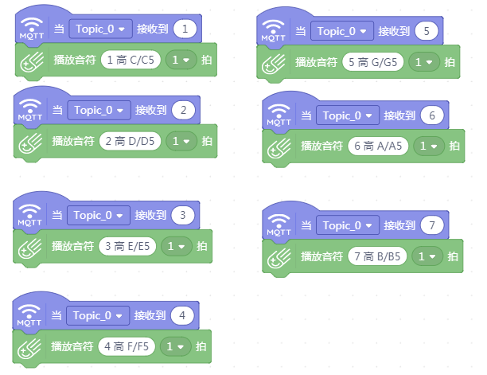5、播放ppt远程弹奏小钢琴
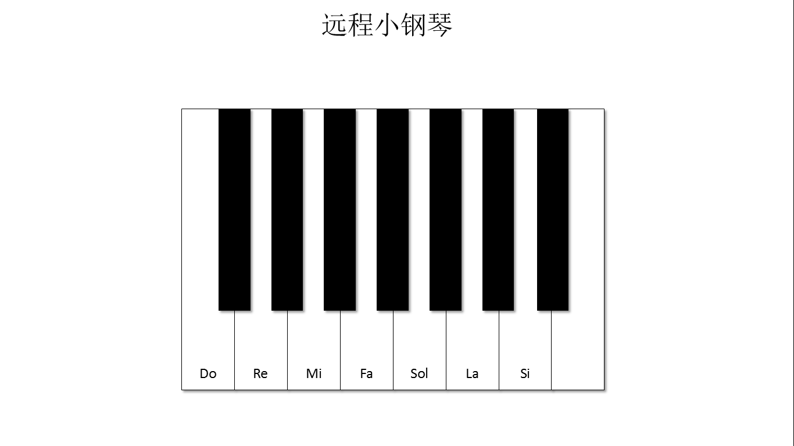6、案例下载地址：下载